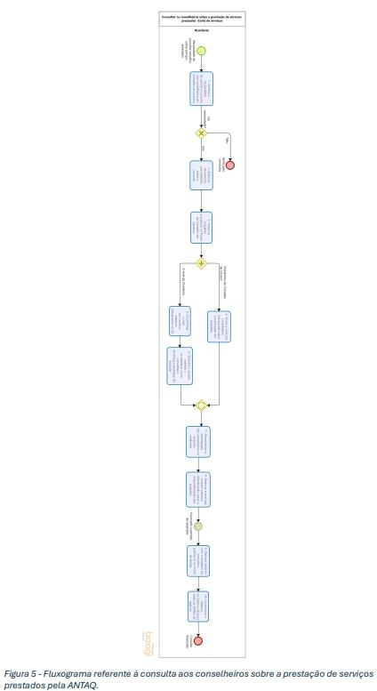

Metodologia · Fluxo da consulta
CAPÍTULO 04
Conselho de Usuários da ANTAQ
Além das cinco etapas metodológicas, a Ouvidoria elaborou um fluxograma que descreve, de ponta a ponta, a consulta aos conselheiros sobre a prestação de serviços da ANTAQ.

AmpliarFigura 5 — Fluxograma referente à consulta aos conselheiros sobre a prestação de serviços prestados pela ANTAQ.
Relatório Anual de Enquetes do Conselho de Usuários · 2026 – Ouvidoria – Agência Nacional de Transportes Aquaviários - ANTAQ